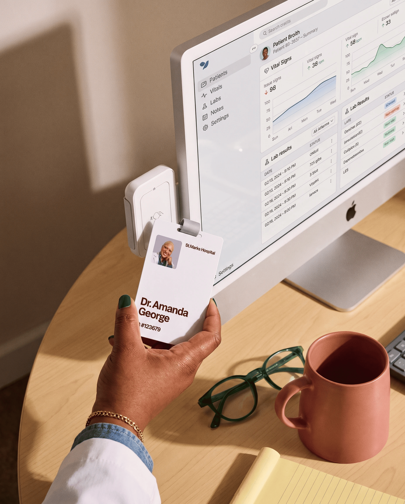
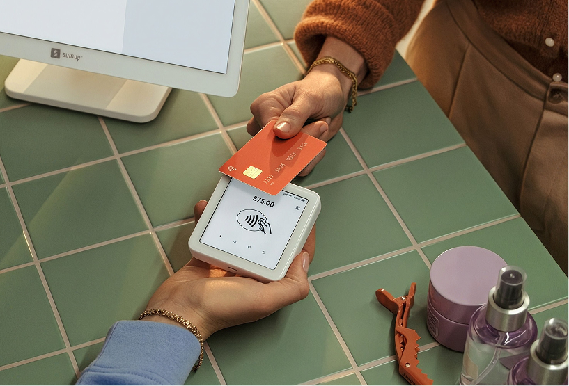

Rod J.
Co-Founder
We bring deep expertise and help companies figure out what technology they should use, how to implement it correctly, and then we help manage and support it all once it’s in place.
Co-Founder
Co-Founder
CISO
CTO
Director, VDI & End User Computing
Director of IT Infrastructure
VP of IT Infrastructure
VP of Technology Solutions
Senior Unified Collaboration Engineer
Director of Networking Engineering
Solutions Engineer
Solutions Engineer
That means helping your organisation design, modernise, implement and operate the environments that your employees rely on every day, from A to Z, improving the end-user experience so well, everything simply works as it should.
Total Number
of Desktops Managed
Customers
Global Delivery Experience
Years of VDI Experience
Tech Managed
CitrixExpertise Across
30+Technology Partners
Technology can be complex. We get that. Spadafy exists to make it feel simple. We look after the whole picture, from identity and security to infrastructure, cloud and everything in between.
Because it all works best when it works together. Remove one, and it’s on the rocks. Forget the other, and we’ll be spending too much time retracing our steps and making sense of where we went wrong.
Spadafy designs and deploy virtual desktop environments tailored to your users, applications, security, and infrastructure. From platform setup and image design to app delivery, profile management, testing, and rollout, we manage the entire deployment process.
We assess existing VDI and end-user computing environments to identify performance, capacity, and operational challenges. We then design a future-ready architecture and roadmap aligned with business goals, user experience, security, and growth needs.
We provide ongoing VDI management and engineering support, including monitoring, maintenance, troubleshooting, patching, upgrades, and performance optimization. Acting as an extension of your IT team, we keep environments stable, secure, and continuously improved.

We analyze the end-user experience across login times, application performance, profiles, desktops, and infrastructure to uncover bottlenecks. Using real-world data, we optimize VDI environments for faster, more reliable, and consistent user experiences.
Spadafy helps organizations modernize legacy infrastructure with hybrid environments that blend on-premises platforms and public cloud services. We optimize workload placement, resiliency, scalability, and cost efficiency while creating a practical path to modernization.

We provide implementation, optimization, troubleshooting, and ongoing support for Imprivata environments. We help improve authentication workflows, tap-and-go access, shared workstation experiences, and integration with VDI, clinical applications, and endpoint platforms.
Behind every environment are people who need to get things done. Their work gives the technology its purpose.
A clinician needs access to the applications their work depends on.
A colleague needs to reach their working environment from another location
IT needs a manageable way to support people, desktops and access.
(yes, there was someone else before you).
“Spadafy helped us get a clear picture of what was really happening in our VDI environment. Their team identified issues we had been chasing for months and gave us a practical roadmap to improve performance and stability.”
Enterprise IT Director
“What stood out was that Spadafy didn’t just hand us a design and walk away. They helped us architect the solution, implement it, and continue to support the environment as an extension of our internal team.”
VP of Infrastructure
“Spadafy understands the entire VDI stack, not just one product. They were able to look across the desktop, applications, profiles, storage, and infrastructure to improve the overall user experience.”
Director of End User Computing
VDI and infrastructure problems are rarely caused by one thing. It means that once we get talking, we can bunker down and build a practical plan versus jumping to conclusions.
Explore the Health CheckGet started by scheduling a free consultation. We’ll listen to your needs and explore how we can help bring your project to life.
Our team will conduct a thorough audit of your project, gathering essential details and preparing the documents for next steps.
Review the action plan we provide, and then let us know if there are any adjustments or suggestions. Collaboration is key!
If, like us, you’re in it for the long haul then shoot us a message.
We’re quick texters, don’t worry.